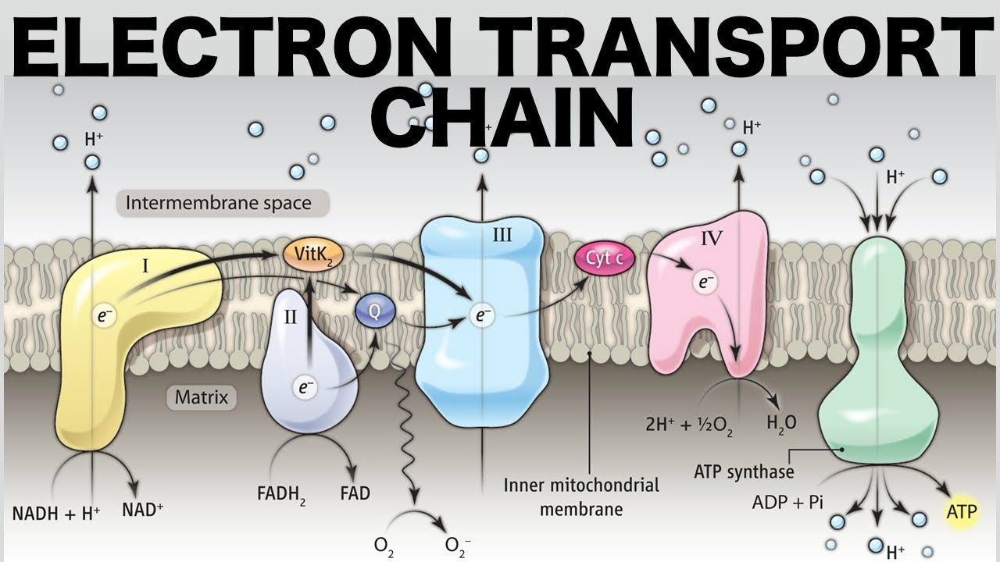

Electron Transport Chain

Finally,the Electron Transport Chain takes place in the inner membrane of the mitochondria.The NaDH and FDAH produced in earlier steps carry eletrons to the chain.These electron move throungh a series of poteins,pumping protons across the membrane and gennerating a proton a proton gradient.This energy is used to create a large amount of ATP-about 32 to 34 molecules.Oxyen is essential in this step as the final acceptor,combinig with electrons and hydrogen ions to form water.
Altogether,cellular respiration can produce up to 36 to 28 ATP from one glucose molecule,making it a highly efficient way for cells to enery.
Go to Home Page <---